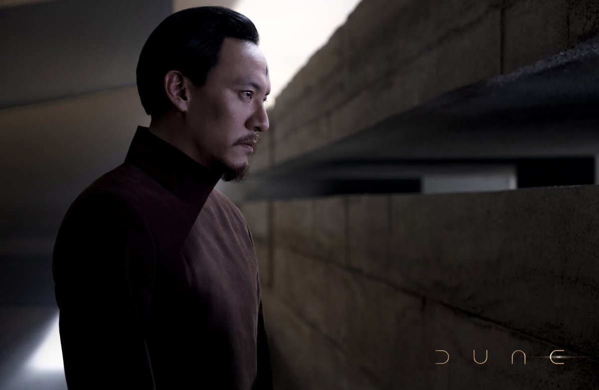

HOUSE ATREIDES
Dr. Wellington Yueh
Healing Hands.
As the trusted House physician for the Atreides royal family, Dr. Yueh uses intricate pressure point manipulation to detect injuries, sense sickness, and even intuit the psychological state of his patients simply by touching them. More than just a doctor, he values human life above all things and is part of the Atreides closest inner circle, having long watched over their wellbeing with the same care he affords his own family.
